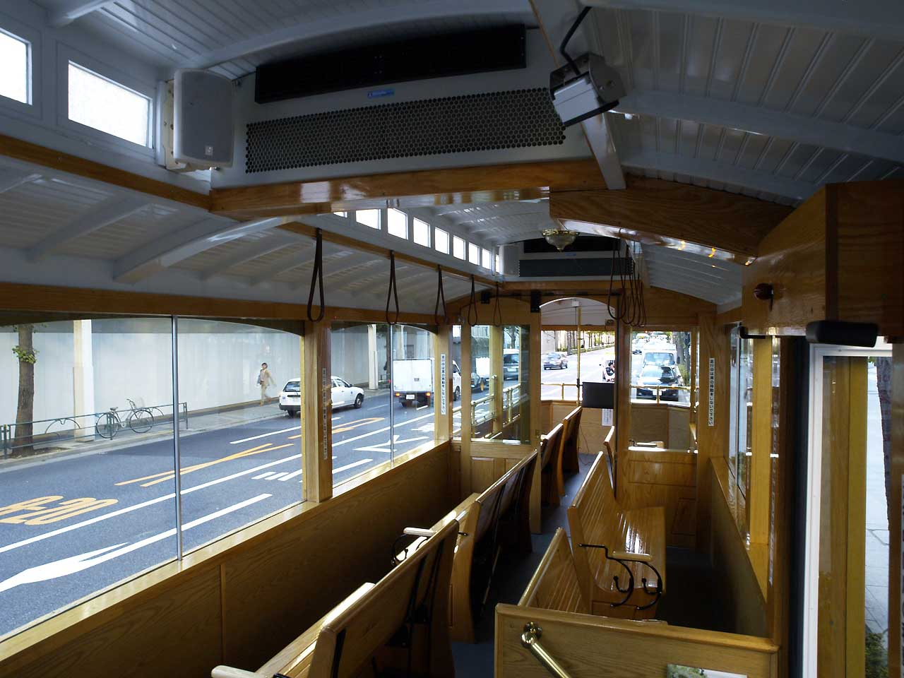
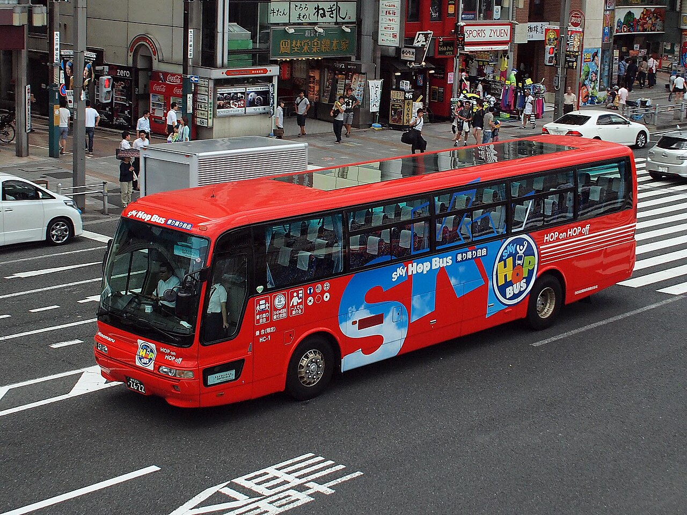
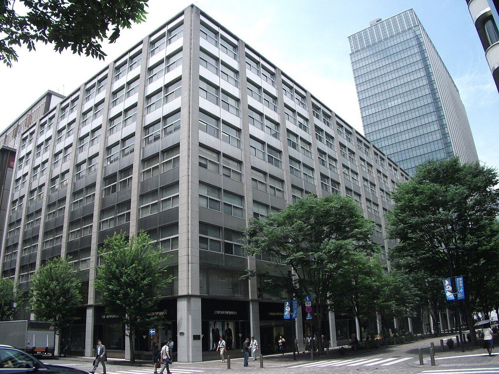

An open-top double-decker with the roof cut off the upper deck, running three sightseeing loops that all meet at the Marunouchi hub by Tokyo Station. One ticket rides every route as many times as you want, so you loop for orientation first and then do the day on foot.



Shinjuku and Shibuya, roughly 9:20 to 16:40. Starts where the hotel is and ends where Monday is going.
Asakusa and Tokyo Skytree, which is exactly the Tuesday plan. A 2-day ticket covers both days.
Tokyo Tower, Tokyo Teleport, Tsukiji and Ginza, for the bay and downtown side of the city.
No roof, so it is the view and the photos. Bring a hat and water in August.
Commentary in seven languages, running on your own phone through the loop.